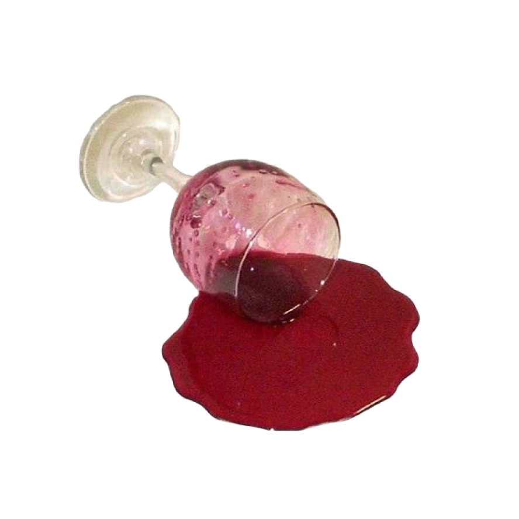
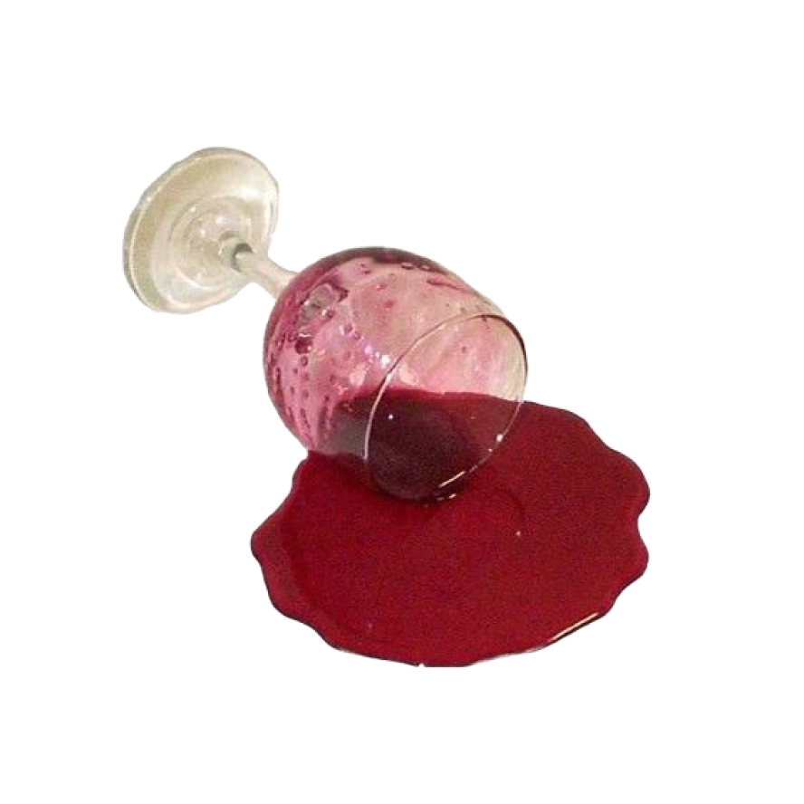

Узнай о сленге 2010-х
и стань на шаг ближе
к пониманию поколений


 
Молодёжный сленг — это слова и выражения, популярные среди детей и подростков. Разбираться в молодёжном жаргоне полезно в любом возрасте: это помогает понять, о чём говорят ваши дети, младшие братья и сёстры и просто люди вокруг.
Мы составили словарь подросткового сленга, которым активно пользуется современная молодёжь. И привели примеры (не только из молодёжной среды), чтобы эти словечки было проще запомнить.

Школота
Котома

Бэнгер

Донатить
Знание молодёжного сленга спасёт от попадания в кринжовые ситуации. Разбираемся в рофлах, вайбах и бэнгерах и объясняем, что такое краш.
Школота
Котома
Бэнгер
Донатить
Молодёжный сленг — это слова и выражения, популярные среди детей и подростков. Разбираться в молодёжном жаргоне полезно в любом возрасте: это помогает понять, о чём говорят ваши дети, младшие братья и сёстры и просто люди вокруг.
Мы составили словарь подросткового сленга, которым активно пользуется современная молодёжь. И привели примеры (не только из молодёжной среды), чтобы эти словечки было проще запомнить.
Русская коммуникативная культура ещё до появления интернета использовала мемы как способ хранения и интерпретации информации. Достаточно вспомнить такие выражения как: «в тридевятом царстве...», «дорога дальняя», или «праздник жизни», которые отсылают к сотням знакомых сюжетов.
Мемами становились пикчи, фотожабы, видео, сленг и характерные персонажи, помогавшие людям в интернете изъясняться. Их используют для передачи мыслей и эмоций, с их помощью можно разрядить напряжённую обстановку, добавить в диалог юмора и сатиры.
«Хороший борщик»

«Свидетель из Фрязино»
«Профессия повар»

«Вы кто такие?»

«Хороший борщик»
«Свидетель из Фрязино»
«Профессия повар»
«Вы кто такие?»
Русская коммуникативная культура ещё до появления интернета использовала мемы как способ хранения и интерпретации информации. Достаточно вспомнить такие выражения как: «в тридевятом царстве...», «дорога дальняя», или «праздник жизни», которые отсылают к сотням знакомых сюжетов.
Мемами становились пикчи, фотожабы, видео, сленг и характерные персонажи, помогавшие людям в интернете изъясняться. Их используют для передачи мыслей и эмоций, с их помощью можно разрядить напряжённую обстановку, добавить в диалог юмора и сатиры.


«Неверный парень»
Как самая драматичная история, рассказанная в мемах. По сюжету герой отказывается от чего-то реального и существующего, того, что ему надоело. Оглядываясь на девушку, он показывает свои тайные желания и предпочтения.
Чаще всего это конфликт полезного с приятным, старого с новым. В прямом смысле парень на фото, будучи в отношениях, все равно заглядывается на другую девушку. В жизни происходит так же: мы часто отказываемся от старых привычек или ненужных знаний в угоду чему-то другому, не всегда полезному.
01
Доге
02

Гарольд
03
Ice Bucket Challenge
04

Лягушонок Пепе
05
Женщина и кот
06

Press F to pay respect
Наверное, всё, что могло прийти из уголовного жаргона, уже пришло. Сейчас актуально словообразование за счет сокращения слов. Работает закон языковой экономии. Вместо зачета — зач, вместо соревнований — соревы. Корпоратив — корп, конференция — конфа. Такая же тенденция есть и в англоязычном молодежном сленге.
Есть общемолодежный сленг, который распространен по всей стране, и есть региональный. Последний используется в основном для каких-то местных названий — улиц, памятников и так далее. Обычно — чтобы вызвать комический эффект.

Артефакты поколений